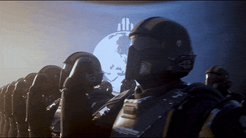
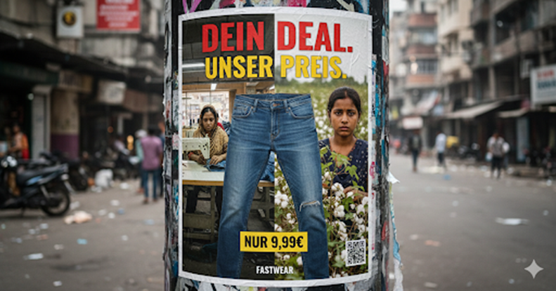
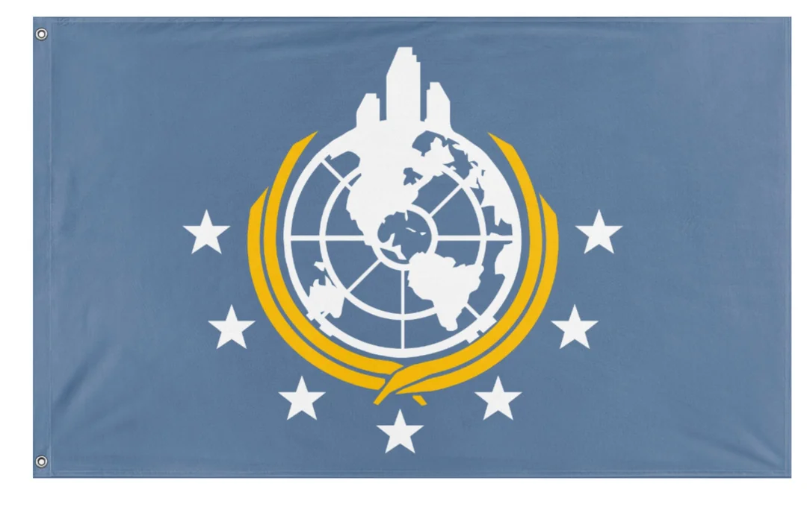
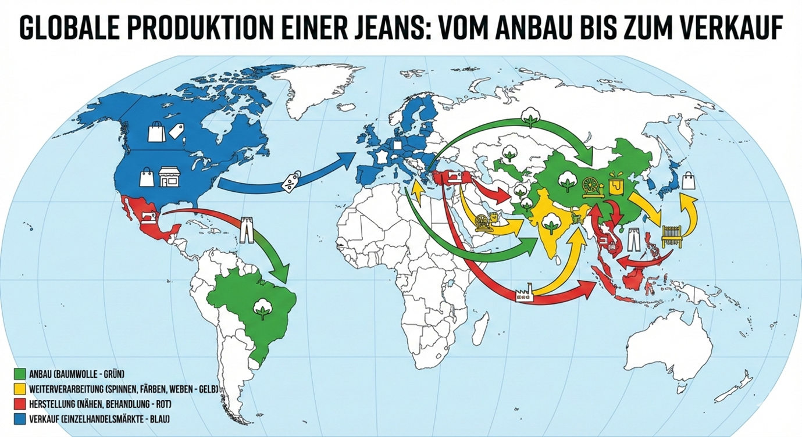
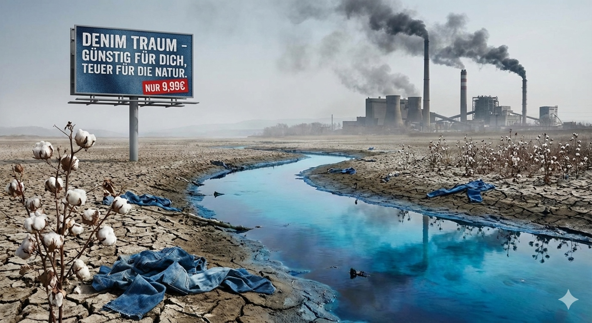
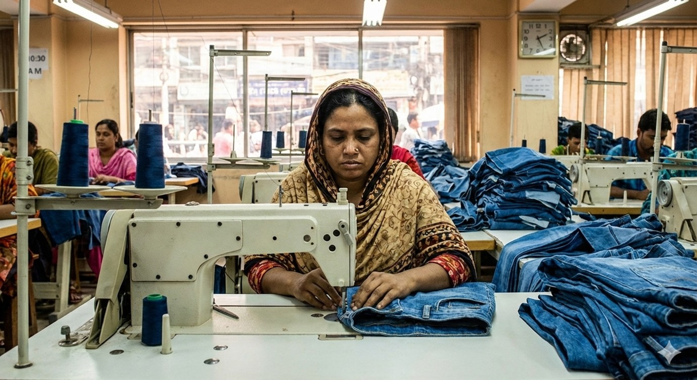
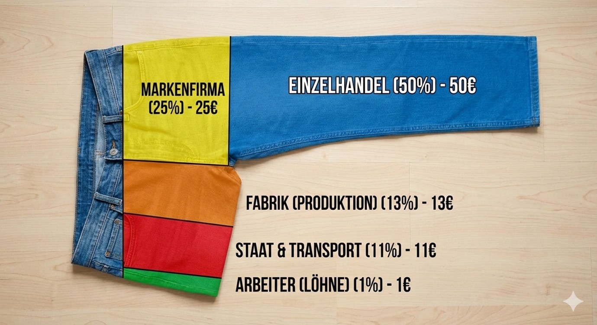

Für die Demokratie! (Klicken zum Schließen)
Am Beispiel der Billig Jeans (=^-ω-^=)

Schön, dass du da bist. Auf dieser Webseite erfährst du alles über den weltweiten Weg einer Jeans und die Auswirkungen der Globalisierung in der Textilbranche. Nutze die Menüleiste oben, um durch die verschiedenen Themen zu navigieren.
Die Textilindustrie ist ein globaler Wirtschaftszweig, der sich mit der Herstellung von Garnen, Geweben und Endprodukten aus verschiedenen Fasern befasst. Sie umfasst den gesamten Produktionsprozess – von der Gewinnung und Verarbeitung von Rohfasern über das Weben, Stricken oder Wirken bis zur Endfertigung von Textilien.
Zu den verwendeten Fasern gehören Naturfasern wie Baumwolle, Wolle, Seide oder Flachs sowie Chemiefasern wie Polyester. Die Industrie gliedert sich in vier Hauptbereiche: Faseraufbereitung, Faserverarbeitung (Spinnerei), Garnverarbeitung (Weberei, Strickerei, Wirkerei) und Textilveredelung (z. B. Färben, Drucken, Beschichten).
Die Textilindustrie zählt zu den ältesten Industriezweigen weltweit und war ein zentraler Treiber der Industriellen Revolution. Heute ist sie stark internationalisiert und arbeitsteilig organisiert. In Deutschland wird nahezu keine Bekleidung mehr produziert, obwohl einige der größten Bekleidungsunternehmen des Landes ansässig sind.
Umweltauswirkungen sind ein zentrales Thema, insbesondere bei der Rohstoffproduktion und der Textilveredelung. Dennoch hat die deutsche Textilindustrie durch technologische Fortschritte erhebliche Verbesserungen erreicht.
Textilien sind Materialien, die aus Fasern hergestellt werden und durch Verarbeitungstechniken wie Weben, Stricken, Filzen oder Verweben zu flächigen oder räumlichen Gebilden werden. Der Begriff leitet sich vom lateinischen „texere“ (weben) ab.
Es gibt zwei Arten von Textilfasern:

Globalisierung bezeichnet die zunehmende weltweite Vernetzung in Wirtschaft, Politik, Kultur und Umwelt. Dieser Prozess umfasst den Austausch von Waren, Dienstleistungen, Kapital, Informationen und Menschen.
Kernmerkmale:
Vor- und Nachteile:
Eine einzige Jeans reist oft weit um die Erde, bevor sie in deinem Schrank landet. Hier sind die Etappen:
Anbau der Baumwolle. Enormer Wasserverbrauch (ca. 8.000 Liter pro Jeans).
STARTPUNKT (ROHBAUMWOLLE)Spinnen der Fasern zu Garnen. Erster großer Transportweg.
+ 3.500 KMWeben des Stoffes und Färben mit Indigo (oft chemisch belastet).
+ 6.000 KMNähen der Jeans. Hier entstehen die fertigen Hosen unter oft schweren Bedingungen.
+ 2.500 KM"Stone-wash" Optik durch Bimssteine oder Chemie-Behandlung.
+ 8.000 KMDie Reise einer Jeans ist ein Paradebeispiel für die globale Arbeitsteilung. Je nach Komplexität der Lieferkette (Knöpfe, Reißverschlüsse, Waschung) legt eine Jeans zwischen 15.000 und 25.000 Kilometern zurück, bevor sie im Laden hängt.
ZIEL ERREICHT: CA. 20.000 KMVISUELLE DARSTELLUNG DER LIEFERKETTE:

Die Produktion einer Jeans fordert einen hohen Tribut. Hier sind die kritischen Umweltfaktoren:
Für eine Jeans werden ca. 8.000 Liter Wasser benötigt – so viel, wie ein Mensch in 7 Jahren trinkt.
Bis zu 1 kg Chemikalien kommen pro Hose zum Einsatz und belasten oft das Grundwasser.

Hinter dem niedrigen Preis einer Billig-Jeans stehen oft Menschen, die unter prekären Bedingungen arbeiten. Die Globalisierung führt hier oft zu einem "Wettlauf nach unten", um die Kosten so gering wie möglich zu halten.
Diese Zustände werden durch mangelnde staatliche Kontrollen und den enormen Preisdruck der westlichen Marken begünstigt.


WARNUNG: SEKTOR-ANALYSE ZEIGT SYSTEMATISCHE MÄNGEL. MISSION ERFORDERT HANDLUNG.
Textilien sind weit mehr als nur Stoff: Sie sind seit jeher reich an Symbolen und Techniken, die kulturelle Identität ausdrücken. Kleidung dient nicht nur dem Schutz, sondern ist ein mächtiges Werkzeug der Kommunikation.
Um die negativen Folgen der Globalisierung zu bekämpfen, gibt es eine klare Strategie: Fairer Handel (Fair Trade).
Fair Trade ist eine Handelspartnerschaft, die auf Dialog, Transparenz und Respekt beruht. Sie strebt nach mehr Gerechtigkeit im internationalen Handel durch:
"Ein bewusster Kauf ist ein Sieg für die globale Gerechtigkeit!"